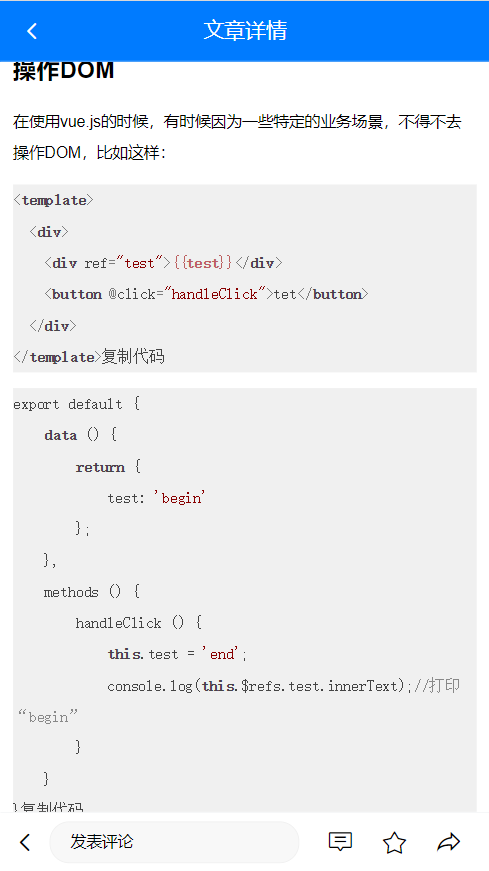
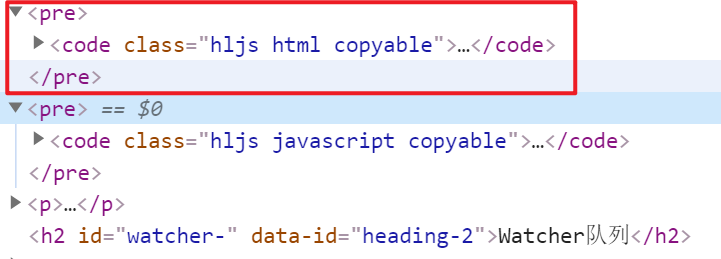

Day07_优化细节
# 1.优化_组件缓存
# 目标
- 防止组件频繁创建和销毁
- 防止网络请求重复无用执行
# 步骤
组件缓存, 可以实现组件的状态保持。
结合 vue 内置的 keep-alive 组件，可以实现组件的状态保持。
官方文档地址：https://cn.vuejs.org/v2/api/#keep-alive
在App.vue中的router-view外层套上一个keep-alive组件
- 缓存的一级路由页面切换不被释放, 但是首页还是会重新请求数据
在Layout.vue中的router-view外层套上一个keep-alive组件
- 这次Home和User页面都被缓存了(二级路由也要管)
但发现搜索页面和详情页面多被缓存起来了 (多次进入不同的文章, 发现都是同一个文章详情)
对router-view使用exclude属性来区别, 哪些页面组件可以缓存
==特别注意exclude里是组件的name名字(跟路由没什么关系)==
<template> <div> <keep-alive :exclude="['ArticleDetail', 'Login', 'Search', 'SearchResult']"> <router-view></router-view> </keep-alive> </div> </template>
# 小结
- 只有被切换销毁的组件, 才需要被缓存
- router-view是他们切换时的挂载点, 套在挂载点外来缓存内部组件
# 2.优化_头像不更新问题
# 目标
User页面缓存了, 修改头像不更新问题

# 分析
User.vue被缓存了, 所以改了头像回到User页面, created里获取用户资料接口不会执行
解决方案1: 把created换成activated钩子函数即可
解决方案2: UserEdit.vue修改头像成功后, 更新到vuex中, User页面使用的vuex数据也受到更新
vuex中定义mutations修改头像
updatePhoto (state, photo) { state.user.photo = photo localStorage.setItem('user', JSON.stringify(state.user)) }UserEdit.vue映射, 调用传成功头像覆盖
import { mapMutations } from 'vuex' export default { // ... methods: { ...mapMutations(['updatePhoto']), async onFileChange (ev) { if (ev.target.files.length === 0) return const fd = new FormData() fd.append('photo', ev.target.files[0]) const res = await updatePhotoAPI(fd) console.log(res) this.profile.photo = res.data.data.photo this.updatePhoto(res.data.data.photo) // 同步头像给vuex } } }
引申 - 用户名字修改也是同理的
vuex中定义修改名字的mutations
updateName (state, theName) { state.user.name = theName localStorage.setItem('user', JSON.stringify(state.user)) }UserEdit.vue页面, 修改名字成功调用更新
import { mapMutations } from 'vuex' export default { // ... methods: { // ... ...mapMutations(['updatePhoto', 'updateName']), // 映射updateName方法 async onNameDialogBeforeClose (action, done) { if (action === 'confirm') { if (/^[A-Za-z0-9\u4e00-\u9fa5]{1,7}$/.test(this.userName)) { await updateProfileAPI({ userName: this.userName }) this.profile.name = this.userName this.updateName(this.userName) // 同步到vuex中 done() } } } } }
# 小结
- 组件缓存, 页面切换走再回来, 不会销毁重建执行所有代码
- 把共享数据放到vuex, 数据改变, 所有引用的地方都会局部更新执行
# 3.优化_文章详情-代码高亮
# 目标
文章详情页里代码片段高亮效果

# 分析
想要让代码高亮, 必须在后台发布文章时, 就要把代码分段用pre+code标签包裹

前端可以通过获取这些标签名/指定类名, 分别给予相应样式
# 步骤
基于 highlight.js 美化详情页的代码片段
英文文档(更全): https://highlightjs.readthedocs.io/en/latest/index.html
中文文档: https://fenxianglu.cn/highlight.html
下载此插件到项目中
==一定要带.js名字==
yarn add highlight.js -D在main.js 引入即可
import hljs from 'highlight.js' // hljs对象 import 'highlight.js/styles/default.css' // 代码高亮的样式注册高亮代码-自定义指令
Vue.directive('highlight', function (el) { // 自定义一个代码高亮指令 const highlight = el.querySelectorAll('pre, code') // 获取里面所有pre或者code标签 highlight.forEach((block) => { hljs.highlightElement(block) // 突出显示这些标签(以及内部代码, 会自动识别语言) }) })在铺设文章详情标签使用v-highlight指令即可
# 小结
- 遇到需求, 多百度解决方案
- 看文档尝试使用解决需求
# 4.优化_文章详情-loading效果
# 目标
- 在网络慢的时候, 可以给用户一个提示
- 在没有文章时, 给用户一个提示
# 步骤
加载效果提示, vant组件有, 找到全局注册
import { Loading } from 'vant'; Vue.use(Loading);标签使用, 和内容+评论势不两立
<!-- 文章加载中... --> <van-loading color="#1989fa">文章疯狂加载ing...</van-loading> <div> <!-- 文章信息区域 --> <div class="article-container"> <!-- ... --> </div> <!-- 文章评论区域 --> <CommentList></CommentList> </div>调整loading标签样式, 给个class类名
<van-loading color="#1989fa" class="loading">文章疯狂加载ing...</van-loading> <style> .loading { margin-top: 50px; text-align: center; } </style>加入判断, 加载中或者文章详情标签出现
<van-loading color="#1989fa" class="loading" v-if="artObj.title === undefined">文章疯狂加载ing...</van-loading> <div v-else> <!-- 文章信息区域 --> </div>
# 小结
- loading效果用数据任意字段判断是否有值即可
# 5.优化_登录未遂地址
# 目标
401时, 自动切登录页
登录后回到刚才页面

# 步骤
要点赞的时候, 401了, 强制跳转到登录页面了, 保存未遂地址跳转到登录页面
要把tokens续签改掉, 否则不会跳转到登录页面
if (error.response.status === 401) { // 身份过期 // token续签方式1: 去登录页重新登录, token无用, 清掉-确保路由守卫if进不去 store.commit('setToken', '') console.log(router.currentRoute.fullPath) router.push({ path: `/login?path=${router.currentRoute.fullPath}` }) // token续签方式2: refreshToken(用户无感知) // store.commit('setToken', '') // const res = await refreshTokenAPI() // store.commit('setToken', res.data.data.token) // 再调用一次未完成的请求啊(用户无感知) // error.config 就是上一次axios请求的配置对象 // console.dir(error.config) // 把新的token赋予到下一次axios请求的请求头中 // error.config.headers.Authorization = 'Bearer ' + res.data.data.token // return到await的地方 // return ajax(error.config) } else { return Promise.reject(error) }在Login/index.vue, 登录后, 判断有未遂地址, 跳这里, 否则去/路径
// 跳转到Layout页面 this.$router.replace({ path: this.$route.query.path || '/layout' })
# 小结
- 401时, 携带当前路由路径到登录页
- 登录时如果url有未遂地址跳转, 否则去首页
# 6.优化_图片懒加载
# 目标
- 图片标签进入视口才加载图片
- 图片src会调用浏览器请求图片资源
# 步骤
vant组件库里有个叫LazyLoad指令, 在main.js中全局注册
import { Lazyload } from 'vant'; Vue.use(Lazyload);先查看首页, 上来默认请求了多少张图片 / 点击别的频道查看
注意: 有的频道图片本身就不多
根据文档指示, 在src/components/ArticleItem.vue中, 把所有img的src换成v-lazy指令即可
<!-- 标题区域的插槽 --> <template #title> <div class="title-box"> <!-- 标题 --> <span>{{ obj.title }}</span> <!-- 单图 --> <img class="thumb" v-lazy="obj.cover.images[0]" v-if="obj.cover.type === 1" /> </div> <!-- 三张图片 --> <div class="thumb-box" v-if="obj.cover.type > 1"> <img class="thumb" v-for="(imgUrl, index) in obj.cover.images" :key="index" v-lazy="imgUrl" /> </div> </template>再次观察上来默认请求的图片个数
原理实现: https://developer.mozilla.org/zh-CN/docs/Web/API/IntersectionObserver
具体例子看这个: https://www.cnblogs.com/lidgblogs/p/7607582.html
# 小结
- 图片懒加载原理是?
- img标签先不给src属性赋值
- 等img标签出现在视口时, 把身上另外属性的图片地址给src请求
# 7.优化_自动聚焦问题(上午结束)
# 目标
- 用户名修改弹窗多次点击
- 只有第一次自动聚焦问题
# 分析
自动聚焦依赖自定义指令inserted执行
而Dialog只有第一次出现是插入到真实DOM, 触发inserted方法
而Dialog以后初选是css层面的显示出现, 不会触发inserted方法
解决方案
给自定义指令添加update方法, 指定所在DOM更新时执行
import Vue from 'vue' // 插件对象(必须有install方法, 才可以注入到Vue.use中) export default { install () { Vue.directive('fofo', { inserted (el) { fn(el) }, update (el) { fn(el) } }) } } function fn (el) { if (el.nodeName === 'INPUT' || el.nodeName === 'TEXTAREA') { // 如果直接是input标签/textarea标签 el.focus() } else { // 指令在van-search组件身上, 获取的是组件根标签div, 而input在标签内 const inp = el.querySelector('input') const textArea = el.querySelector('textarea') // 如果找到了 if (inp || textArea) { inp && inp.focus() textArea && textArea.focus() } else { // 本身也不是, 子标签里也没有 console.error('请把v-fofo用在输入框标签上') } } }
# 小结
- inserted只有第一次指令所在标签, 插入真实DOM执行
# 8.优化_抽离组件注册
# 目标
- main.js代码有些多, 分散出去
# 步骤
创建src/VantRegister.js, 把Vant注册的相关代码复制过来
import Vue from 'vue' import { NavBar, Form, Field, Button, Tabbar, TabbarItem, Icon, Tab, Tabs, Cell, List, PullRefresh, ActionSheet, Popup, Row, Col, Badge, Search, Divider, Tag, CellGroup, Image, Dialog, DatetimePicker, Loading, Lazyload } from 'vant' Vue.use(Lazyload) Vue.use(Loading) Vue.use(DatetimePicker) Vue.use(Dialog) Vue.use(Image) Vue.use(CellGroup) Vue.use(Tag) Vue.use(Divider) Vue.use(Search) Vue.use(Badge) Vue.use(Row) Vue.use(Col) Vue.use(Popup) Vue.use(ActionSheet) Vue.use(PullRefresh) Vue.use(List) Vue.use(Cell) Vue.use(Tab) Vue.use(Tabs) Vue.use(Icon) Vue.use(Tabbar) Vue.use(TabbarItem) Vue.use(Form) Vue.use(Field) Vue.use(Button) Vue.use(NavBar)在main.js引入一下, 让代码执行
import './VantRegister'总结下模块化的3种使用方式
- 按需导出和导入
- 默认导出和导入
- 无导出和导入
# 小结
- vuecli脚手架环境是基于node+webpack的模块化开发
- 所以想要使用别的js文件, 就要导入过来
# 9.优化_首页-滚动条位置
# 目标
切换首页和我的页面
首页滚动条位置需要恢复

# 步骤
keep-alive不会缓存滚动条的位置的
- 路由对象/home, 上添加meta额外信息
meta: { isRecord: true, top: 0 } // isRecord是否需要设置滚动位置
给Home设置组件内守卫
注意: 此方法与methods并列
// 路由离开 - 触发(保存滚动位置)
beforeRouteLeave (to, from, next) {
from.meta.top = window.scrollY
next()
}
- 在全局后置钩子设置页面滚动条
// 全局后置钩子
router.afterEach((to, from) => {
// 如果当前的路由的元信息中，isRecord 的值为 true
if (to.meta.isRecord) {
setTimeout(() => {
// 则把元信息中的 top 值设为滚动条纵向滚动的位置
window.scrollTo(0, to.meta.top)
}, 0)
}
})
# 10.优化_频道-滚动条位置
# 目标
- 明确数据结构
- tabs切换保存当前位置
- tabs切换后, 把位置设置
# 步骤
明确数据结构, 在Home/index.vue定义变量
// “频道名称”和“滚动条位置”之间的对应关系，格式 { '推荐ID': 211, 'htmlID': 30, '开发者资讯ID': 890 } const nameToTop = {}tabs标签绑定before-change事件和方法实现
向nameToTop添加属性和位置, 缓存起来
<van-tabs v-model="channelId" animated sticky offset-top="1.226667rem" :before-change="tabBeforeChangeFn"> <script> methods: { // 频道切换之前触发 tabsBeforeChangeFn () { nameToTop[this.channelId] = window.scrollY // 先保存要被切走频道的滚动距离(一定要用哦this.channelId里存着的) // 只有return true才会让tabs切换 return true } } </script>监测tabs切换后, 从nameToTop对象里拿到原本滚动位置设置
<van-tabs v-model="channelId" animated sticky offset-top="1.226667rem" :before-change="tabsBeforeChangeFn" @change="tabsChangeFn"> <script> methods: { // 频道切换后 tabsChangeFn (channelId) { // 等 DOM 更新完毕之后，根据记录的"滚动条位置"，调用 window.scrollTo() 方法进行滚动 this.$nextTick(() => { window.scrollTo(0, nameToTop[channelId] || 0) }) } } </script>
# 小结
- 首先明确数据结构, 频道id对应滚动条值
- 切换之前保存, 切换之后从数据结构取出对应值设置
# 11.优化_持久化存储方式
# 目标
- 封装本地持久化方法
# 步骤
创建utils/storage.js文件, 定义4个方法
// 本地存储方式 // 如果同时有sessionStorage和localStorage, 可以封装2份 // 现在我只封装一种统一的方式 export const setStorage = (key, value) => { localStorage.setItem(key, value) } export const getStorage = (key) => { return localStorage.getItem(key) } export const removeStorage = (key) => { localStorage.removeItem(key) } export const clearStorage = () => { localStorage.clear() }把所有使用本地存储的地方, 都统一换成这里定义的方法
- 在store/index.js - vuex中使用过
- 在search/index.vue - 搜索页面使用过
# 小结
- 为了防止项目中本地存储方式切换, 统一封装
- 以后万一切换, 可以直接修改utils/storage.js内的真正实现即可
# 12.优化_封装统一便于扩展的Notify
# 目标
- 万一以后项目的通知框要统一更换
# 步骤
新建utils/Notify.js文件
// 基于vant组件库, UI层弹窗封装 // Notify函数 // import { Notify } from 'vant' import { Toast } from 'vant' export const MyNotify = ({ type, message }) => { // Notify({ // type: type, // message: message // }) if (type === 'warning') { Toast({ type: 'fail', message }) } else if (type === 'success') { Toast({ type, message }) } }演示登录页面Login.vue提示框, 别的页面也是这样用
import { MyNotify } from '@/utils/Notify' methods: { ...mapActions(['asyncLoginAction']), async onSubmit () { try { await this.asyncLoginAction(this.formLogin) MyNotify({ type: 'success', message: '登录成功' }) // 跳转到Layout页面 this.$router.replace({ path: this.$route.query.path || '/layout' }) } catch (err) { MyNotify({ type: 'warning', message: '手机号或密码错误' }) } } }
# 小结
- 封装统一UI弹窗, 以后更改封装的自定义函数内部实现, 整个项目所有UI弹窗都换掉
# 13.知识点_大数
# 目标
- 了解什么是大数
- 知道JS中最大安全数范围
# 准备
这里往下都是讲解知识点, 跟项目没有太大的关系了, 新建一个脚手架环境叫study
# 步骤
定义后台返回数据, 模拟大数
后台数据库id, 生成算法是19位置
const str = '[{"id": 1302900300041101987}, {"id": 1205340366642205763}, {"id": 7689021398237123422}]'尝试用JSON.parse转换, 发现转换后的值不对
后面3位精度错误
console.log(JSON.parse(str))原因: JS范围的安全数打印
console.log(Number.MAX_SAFE_INTEGER) // 9007199254740991详细原因可以看这里: https://lidongxuwork.gitee.io/pages/webFront/javascript/run/0.1+0.2%E9%97%AE%E9%A2%98.html
解决方案, 可以引入第三方包叫json-bigint
把大数转成字符串保存
const jsonBig = require('json-bigint')({ storeAsString: true }) console.log(jsonBig.parse(str))
# 扩展
如果以后在axios中处理大数问题, 这么搞
const jsonBig = require('json-bigint')({ storeAsString: true })
const ajax = axios.create({ baseURL: 'http://toutiao.itheima.net/', // 请求的基础路径 transformResponse: [function (data) { // 对内容进行处理 // data:就是本次请求获取的数据 // 在这里可以对它进行进一步的处理 -- JSONbig // 后端返回数据可能不是 JSON 字符串，而JSONbig.parse()只能处理JSON字符串 // 所以，为了保证代码可以正常执行，这里引入try-catch来捕获异常 try { // 尝试着进行大数的处理 return jsonBig.parse(data) } catch { // 大数处理失败时的后备方案 return JSON.parse(data) } }] })
# 小结
- 为何会出现19位ID?
- 后台算法不同, 计算出19位ID值
- JS安全数字范围?
- 16位的一个数字
- 超过16位也能显示, 但是精度不准确
# 14.知识点-前端传参格式
# 目标
- 了解请求体, 内容类型
# 请求头内容类型
只有请求体里有传递的值给后台, 才会出现Content-Type
字段: Content-Type值
作用: 告诉后端你传递请求体内容的类型, 后端用对应方式解析 (如果设置错了可能导致后台收不到请求体数据)
| Content-Type值 | 请求体值 | 解释 |
|---|---|---|
| application/json;charset=UTF-8 | {"target":"8206","content":"12123"} | JSON字符串 |
| multipart/form-data; boundary=----WebKitFormBoundaryDIG2g3sYegVy7GmH | ------WebKitFormBoundaryDIG2g3sYegVy7GmH Content-Disposition: form-data; name="photo"; filename="Koala.jpg" Content-Type: image/jpeg ------WebKitFormBoundaryDIG2g3sYegVy7GmH-- | 表单对象 |
| application/x-www-form-urlencoded | key=value&key=value&key=value | 查询字符串 |
| text/plain | nihao啊后台 | 普通文本(不用) |
# 小结
- 请求体内容类型分哪几种?
- JSON字符串
- 查询字符串
- 普通文本
- 表单数据